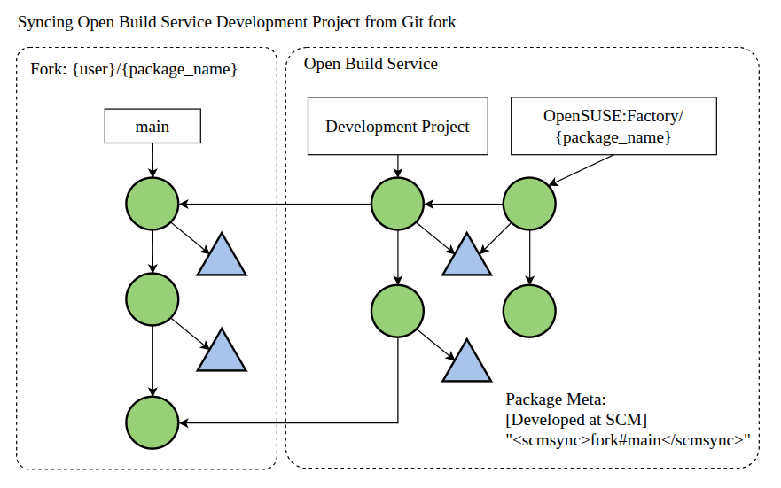

Note: This article has been written without the use of any LLMs or AI text generation tools
Introduction
In this article I hope to bring light to an important topic for package maintainers and that’s the switch from the Open Build Service Workflow to Git Packaging. This year marks the 10th anniversary of the public release of OBS, so it is only natural to have a discussion of some key takeaways from the present model and how the migration to a Git workflow aims to make maintainers’ lives easier, as the industry heads towards an exciting new chapter for packaging, rooted in a grassroots open-source movement with OpenSUSE, Debian and Arch Linux taking the charge.
In Ludwig Nussel’s Git Native Packaging talk at SUSE Labs Conference 2023, he highlights the core benefits of the git workflow being the lack of patches and tarballs, which I could one day vent about the frustration of package patches at length in a different article. To add to his point, we have to remember the act of maintaining and updating packages for a linux distribution, remains true to the heart of open-source software development, which is the collaboration. The industry has long understood that software development workflows like gitflow remains the standard for collaborative software development, so why should packages be any different? We have also seen this shift in other areas, such as infrastructure and operations, with the implementation of Infrastructure-as-Code tools and approaches, which has resulted in positive and significant impacts to the field.
As one can imagine, shifting from a established model that supports thousands of packages, comes with challenges and the migration is a gradual process, so in this article I will go over the current process for updating a package in the OpenSUSE:Factory repository, main repository of the Tumbleweed flavor which still uses OBS in parts of the process, and then updating the same package in pool/{package_name}, main repository of the Leap flavor which is already on the git-based workflow, hosted at the OpenSUSE Source. To illustrate the examples clearly, I will use the micro-editor package, which I am the maintainer and is widely available for both Leap and Tumbleweed as well as all architectures (x86_64, aarch64, s390x and RISC-V), but be sure this can work with any package that has an OBS development project and is present at OpenSUSE Source Pool.
The relationship between OBS and OpenSUSE Source (Git)
As of the time of writing this article, if you are a package maintainer and (most likely) want your package available on both Leap and Tumbleweed, you will need to work with both OBS and Git-based packaging, as Leap has already moved to a Git solution, but Tumbleweed still relies on the OpenSUSE:Factory repository.
In summary, we will want to sync our OBS Development Project to track our project fork on Source, we can do this by checking the OBS package Metadata section for the <scmsync> tag, as shown by the Metadata content of the micro-editor package:
<package name="micro-editor" project="devel:languages:go">
<title/>
<description/>
<scmsync>https://src.opensuse.org/gbazzotti/micro-editor.git#main</scmsync>
<person userid="gbazzotti" role="maintainer"/>
</package>
This allows the OBS Development Project to be automatically updated from the changes applied to the specified branch of the Source fork, in this case the main branch was used to avoid conflict with the factory and leap-x.x branches, since they are used to open Pull Requests against pool/{package_name}.
For the sake of simplicity and not getting two different services mixed up, when I write factory I am referencing the branch of both the pool/{package_name} and {user}/{package_name} repositories available at the OpenSUSE Source (https://src.opensuse.org/), while when I write OpenSUSE:Factory I am referencing the OBS (https://build.opensuse.org/) repository that requires a OSC pull from the development project.
Although the Open Build Service is not strictly a git repository, the workflow can be illustrated by the following example:

Contributing to pool packages
To start this walkthrough let’s assume you have met the following requirements:
- You are the maintainer of your package’s Development Project on OBS
- Example: the
micro-editorpackage is developed within thedevel:languages:gospace. It can be verified by accessing the following link: https://build.opensuse.org/package/show/devel:languages:go/micro-editor
- Example: the
- Your package can be found at the pool source
- For the example above: https://src.opensuse.org/pool/micro-editor
Having met those requirements, we will want to start by creating your fork of the pool/{package_name} repository to work as a devel version, which we will then use to open PRs against the first. Important to note, ideally this would be under a development project within the OpenSUSE Source, this would make it easier to run ppipelines to check build status before committing to pool. However as of time of writing, only a few projects have been created with this purpose and we are still in the process of migrating, one good example to take a look is the Node.js development project.
Developing within the project fork
After having created our fork, let’s clone it in our local machine, access it and check general commands
git clone gitea@src.opensuse.org:$YOURFORK/$PACKAGE_NAME.git
cd $PACKAGE_NAME
cat _service # Check the git operations
osc service mr # Perform a manual run of services in _service
Important: now if we make any changes and stage all changes, we would also be checking out the subdirectory, which would break the package, so please only git add specific files that were changed, those will typically be {package_name}.tar.gz, {package_name}.spec and {package_name}.changes.
Now after we make changes to the package, let’s commit these changes in the main branch of our fork, for example
bazgab@localhost ~/packaging/micro-editor (main)$ git push
Locking support detected on remote "origin". Consider enabling it with:
$ git config lfs.https://src.opensuse.org/gbazzotti/micro-editor.git/info/lfs.locksverify true
Enumerating objects: 5, done.
Counting objects: 100% (5/5), done.
Delta compression using up to 8 threads
Compressing objects: 100% (3/3), done.
Writing objects: 100% (3/3), 369 bytes | 369.00 KiB/s, done.
Total 3 (delta 2), reused 0 (delta 0), pack-reused 0 (from 0)
remote:
remote: Create a new pull request for 'main':
remote: https://src.opensuse.org/gbazzotti/micro-editor/pulls/new/main
remote:
remote: . Processing 1 references
remote: Processed 1 references in total
To src.opensuse.org:gbazzotti/micro-editor.git
493acf5..43bdedb main -> main
Since proper CI pipelines are not established yet in the development project, we can locally run the osc build command to test our changes and see if the package builds without errors. After we check that it builds successfully, and the changes are present in the the main branch of our fork, we can open a PR to sync the remaining branches (as of now: factory, leap-16.0 and leap-16.1) to our main branch within our fork, using the fast-forward only merging method. This can be through the OpenSUSE Source WebUI, or by using the gitea CLI (make sure to properly define these environment variables in your ~/.bashrc or ~/.profile)
tea login add --name $SRC_USER --url %GITEA_SERVER_URL --token $GITEA_SERVER_TOKEN
tea pr create --repo $SRC_USER/$PACKAGE_NAME --title "PR Title" --base factory --head main
From the project fork to pool
Now that our branches within the fork are in sync with the main development branch, we can open a PR against pool/{package_name} so it can go through the review process and be updated in pool. Following the same workflow, we sync our fork’s {branch_name} to pool’s {branch_name}. The full process is demonstrated below

Applying changes to Tumbleweed
As previsouly commented, Tumbleweed still relies on OBS, while Leap is already on the git workflow. So to get our package on Tumbleweed we will use the OSC tool to open a submit request from our development project to OpenSUSE:Factory
bazgab@localhost ~/packaging/micro-editor (main)$ osc submitreq devel:languages:go micro-editor openSUSE:Factory
bazgab@localhost ~/packaging/micro-editor (main)$ created request id 1325990
Once accepted in OpenSUSE:Factory the factory branch of https://src.opensuse.org/pool/micro-editor will be updated by a sync script. Another important note: right now, you cannot directly submit pool/{package_name}#factory to pool/{package_name}#leap-16.1 for example, so you have to submit from your fork ({user}/{package_name}) directly into pool/{package_name}#leap-16.1.
Conclusion
With that, your newly updated package will be sent for review on pool/{package_name} and OBS, and after approval it should be available both on Leap and Tumbleweed. As we move forward, the workflow will be adapted to be fully on git for Tumbleweed, with proper CI pipelines being configured to get build results directly from the development project on OpenSUSE Source, significantly improving the packaging experience. If this article was helpful and you have any questions, please do not hesitate to contact me at gabriel.bazzotti@suse.com or through the links in the About page.